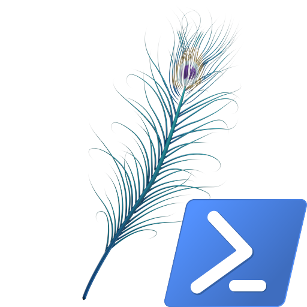

Peacock PowerShell
Version 0.0.0 — early planning phase. Nothing to download yet, but here's the idea.
Peacock PowerShell is a script idea that will handle the whole Peacock server setup for the Hitman trilogy. No more editing host files, messing with ports, or running random .bat files — one script to do it all.
What it'll do
- Check and install dependencies (Node.js, Git, certs)
- Download and set up the latest Peacock build
- Configure host file and SSL so the game connects locally
- Start the server with one command
- Clean up if you want to go back to official servers
Planned Features
- One-command setup and teardown
- Works with Steam and Epic
- Safe rollback to original settings